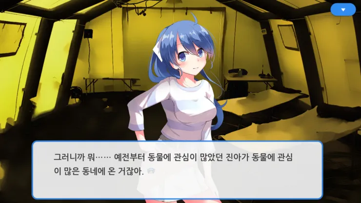
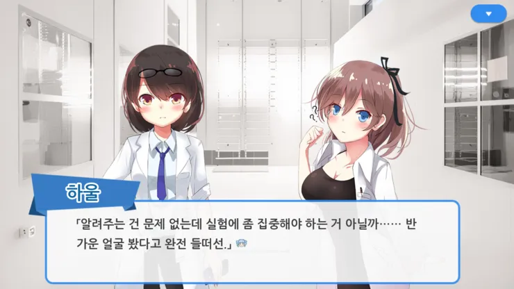
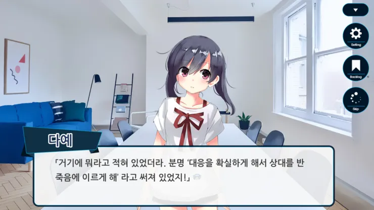
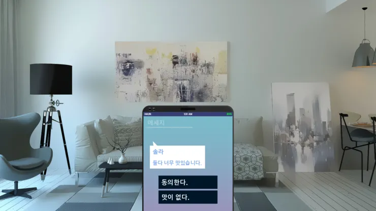

프로젝트 14 · 발매일 미정
두루뫼로 향한 도망.
그곳에서 다시 마주친 얼굴들, 그리고 풀리지 않는 실종.
고등학교를 졸업한 뒤, 모든 것에 질려버린 하울은 두루뫼로 무작정 이사를 간다. 새로운 사람들과 다채로운 청춘을 기대했지만, 그곳에서 다시 마주친 건 옛 얼굴들이었다. 다예, 진아. 그리고 같은 이름을 가진 하얀. 뒤늦게 시작된 아르바이트, 수상한 실험, 그리고 두루뫼시에서 벌어진 실종 사건. 편안한 일상을 꿈꿨을 뿐인데, 이상한 일은 끊이지 않는다.
두루뫼에서 벌어지는 또 다른 수상한 이야기.

고등학교를 졸업한 뒤, 모든 것에 질려버린 하울은 두루뫼로 무작정 이사를 간다. 새로운 사람들과 다채로운 청춘을 꿈꿨지만, 도착하자마자 다예가 나타나고 얼마 지나지 않아 진아까지 마주치게 된다.

다예의 제안으로 시작된 타로카드 점. 첫 손님 솔라가 2만원을 내고 사라진다. 세 번 연속으로 '달 카드'가 나오는 이상한 운세.

솔라와 하얀이가 함께 연구하는 실험실에서 수치 입력 아르바이트를 시작한다. 퍼플루오로데칼린이라는 액체를 저렴하게 대량 생산하는 것이 목표!

두루뫼시에서 실종 사건이 발생한다. 그리고 그 장소는 하울이 흑요를 만났던 사슴로. 하울은 실종 사건이 일어난 그 시각, 그 장소에 있었다.
이야기를 이끌어가는 인물.
길에 쓰러져 있던 기억상실자. 이름은 스스로 하얀이라고 밝혔다. 기억이 돌아오자 이바천에서 솔라와 함께 연구하던 사람이라는 사실이 드러난다. 실험 실패로 기억을 잃었다.
두루뫼에서 다시 마주친 얼굴. 과거 하울에게 고백한 적이 있다. 사모예드 '양샤'를 기르고 있으며, 동물에 관심이 많다. 그 강아지가 사라지자 하울을 찾아온다.
하울을 따라 두루뫼로 이사 온 소꿉친구. 이바천 시절 맛있는 약 유통을 담당했던 전력이 있다.
솔라의 연구에 자금을 대는 연예인. 과거 개울가에서 개에게 구조된 경험이 있다.
퍼플루오로데칼린을 저렴하게 대량 생산하려는 연구원. 타로카드 손님으로 하울과 처음 만났다. 하얀이와 함께 연구하며, 연구실과 포장마차 두 곳에 실험 공간을 마련한다.
두루뫼에서 펼쳐지는 이야기, 다양한 엔딩을 만나보세요.
설명 내용이 여기에 들어갑니다.